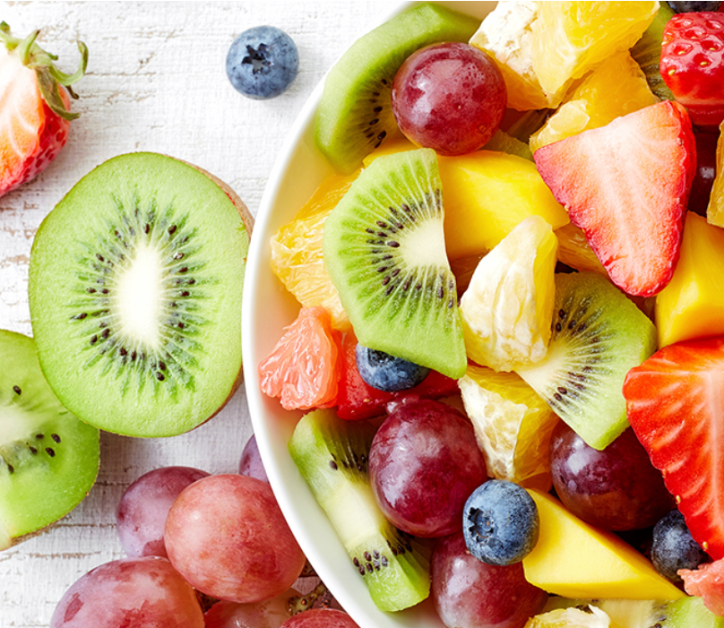

El grupo de las frutas incluye todas las frutas y el jugo 100% natural de fruta. Las frutas pueden ser frescas, congeladas, enlatadas o deshidratadas. Se pueden consumir enteras, cortadas, en puré o cocidas. Al menos la mitad de la cantidad recomendada de fruta debe provenir de fruta entera, en lugar de jugo 100% natural.
Tus necesidades de fruta dependen de tu edad, sexo, altura, peso y actividad física. Esta cantidad también puede variar si estás embarazada o en período de lactancia.
Encuentra la cantidad adecuada para ti con tu Plan MiPlato. Para obtener una guía general por edad, consulta la tabla a continuación.
¿Qué se considera una taza de fruta?
1 taza de fruta fresca, congelada o enlatada
½ taza de fruta seca
1 taza de jugo de fruta 100%
La siguiente tabla muestra las cantidades que cuentan como 1 taza del grupo de frutas.
Más sobre el grupo de frutas
La siguiente tabla muestra las cantidades que cuentan como 1 taza del grupo de frutas.
Nota: Haga clic en la fila superior para ampliar la tabla. Si usa un dispositivo móvil, es posible que deba girarlo para ver la tabla completa.
*Estas son recomendaciones generales por edad. Encuentra la cantidad adecuada para ti consultando a tu médico.
Recomendaciones diarias*
Edad
Cantidad
Niños pequeños
12 a 23 meses
½ a 1 taza
Niños
2-3 años
1 a 1½ taza
4-8 años
1 a 2 taza
Chicas
9-13 años
1½ a 2 taza
14-18 años
1½ a 2 taza
Niños
9-13 años
1½ a 2 taza
14-18 años
2 a 2½ taza
Mujer
19-30 años
1½ a 2 taza
31-59 años
1½ a 2 taza
60+ años
1½ a 2 taza
Hombres
19-30 años
2 a 2½ taza
31-59 años
2 a 2½ taza
60+ años
2 taza
Cantidad que cuenta como 1 taza de fruta
Manzana
1 manzana pequeña o ½ grande
1 taza, cortada en rodajas o picada, fresca
⅔ taza, horneada
½ taza, seca
Banana
1 plátano grande
1 taza, en rodajas
⅔ taza, machacada
Arandanos
1 taza, fresca o congelada
⅓ taza, seca
Uvas
22 uvas sin semillas
1 taza, entera o cortada
Mango
7 rebanadas o trozos, frescos o congelados
1 taza, fresca o congelada
⅓ taza, seca
Naranja
1 naranja grande
1 taza, secciones
Papaya
1 papaya pequeña
1 taza, en rodajas o picadas
Piña
taza, en trozos, en rodajas o triturada
1 taza, fresca, cocida, congelada o enlatada, escurrida
Fresas
Unas 8 fresas grandes
1 taza, entera, cortada por la mitad o en rodajas, fresca o congelada
Frutos secos
½ taza de fruta seca
¿Por qué es importante comer fruta?
Comer fruta tiene muchos beneficios para la salud. Las personas que consumen frutas y verduras como parte de una dieta integral pueden reducir el riesgo de ciertas enfermedades. Las frutas aportan los nutrientes necesarios para mantener la salud y el cuerpo.
Nutrientes
La vitamina C es importante para el crecimiento y la reparación de todos los tejidos corporales. Ayuda a cicatrizar cortes y heridas, y a mantener la salud de los dientes y las encías. La vitamina C facilita la absorción del hierro.
Fibra
La fibra de las frutas ayuda a mejorar la digestión y a mantener un sistema digestivo saludable. También puede ayudar a reducir el colesterol.
Bajo en calorías
Muchas frutas son naturalmente bajas en calorías, lo que las hace ideales para mantener un peso saludable.

Beneficios para la salud
Todas las elecciones de comida y bebida importan.
Concéntrese en la variedad, la cantidad y la nutrición.
Comer alimentos como frutas, que tienen menos calorías por taza, en lugar de otros alimentos con mayor contenido calórico, puede ayudar a reducir la ingesta calórica general.
Consumir una dieta rica en frutas y verduras como parte de una dieta saludable en general puede reducir el riesgo de sufrir enfermedades cardíacas, incluidos ataques cardíacos y accidentes cerebrovasculares.
Consumir una dieta rica en frutas y verduras como parte de una dieta saludable en general puede proteger contra ciertos tipos de cáncer.
Añadir fruta puede ayudar a aumentar la cantidad de fibra y potasio que consumimos. Estos son nutrientes importantes que muchas personas no consumen en suficiente cantidad.